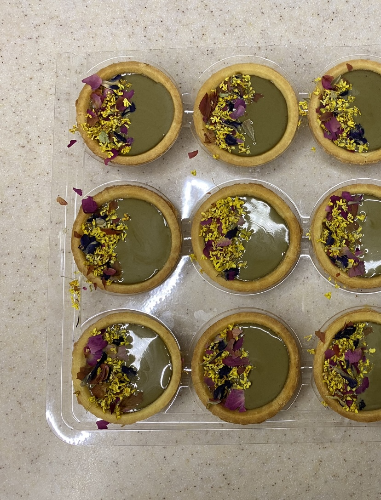

Hojicha Tart

A bite-sized sweet treat that is great on its own or to end off any meal.
Hojicha (roasted green tea) originated from Kyoto about a century ago. When the roasted notes of hojicha custard meet the slight crunch of the tart, the subtle sweetness that entails on the tastebuds has an earthy and floral finish.
Serves: 6 pax
Ingredients
(Increase amount of ingredients according to number of servings required.)
For the Hojicha Custard:
- 1/2 Cup Granulated Sugar or Brown Sugar
- 3 1/2 Tbs Corn Starch
- 2 Tbs Hojicha Powder
- 1/4 Tsp Salt
- 2 1/2 Cups Whole Milk
- 1/4 Cup and 2 Tbs of Heavy Whipping Cream
For the Floral Garnish:
- 8 g Dried Osmanthus Flowers
- 8 g Dried Blue Pea Flowers
- 8 g Dried Rose Buds
- A packet of small ready-made tarts (approximately 30 pieces)
Steps
- Mix the sugar, corn starch, Hojicha powder, and salt in a medium cooking pan. Pour in the milk and cream. Mix thoroughly.
- Heat the mixture over medium heat, constantly whisking to make sure that the mixture is as lump-free as possible. Heat until the mixture reaches a boil. Continue to cook for another minute or so (the longer you cook, the firmer the texture will be.)
- Strain the mixture with a fine-mesh sieve into a bowl. Place a cling wrap over the bowl and leave to cool for 10 minutes.
- Use a ladle to scoop the Hojicha custard into the tart shells.
- Mix the dried flowers together and garnish the tarts with the flowers.
- Chill the tarts for at least an hour or up to two days before serving. Enjoy!